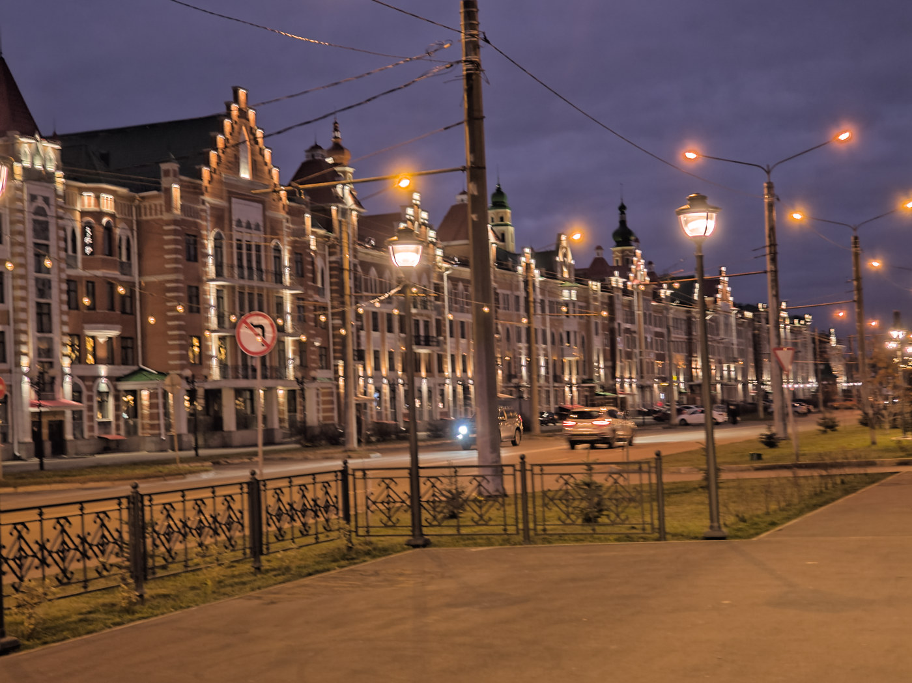
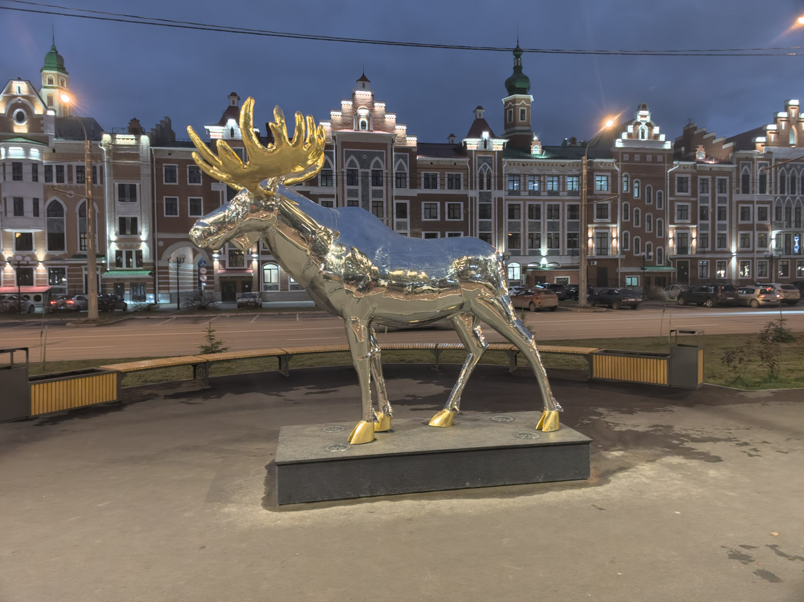
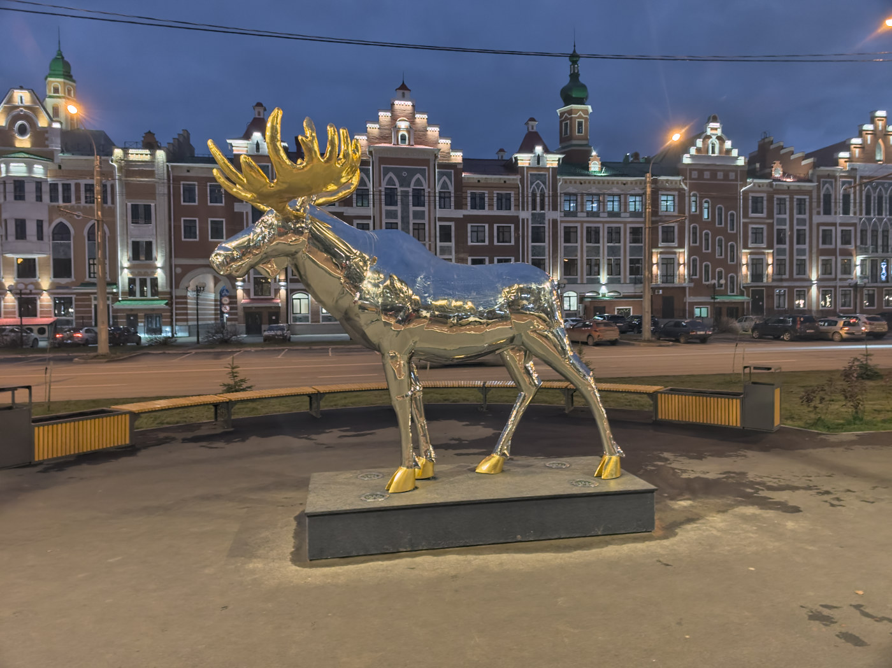
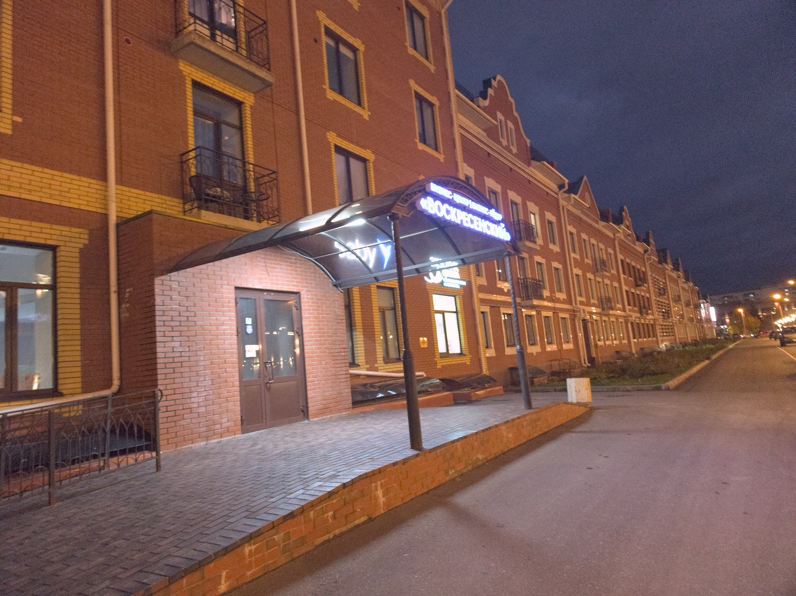

LightCraft Manual Editing Skill
An AI agent skill for automatic photo improvement of RAW files in LightCraft 0.21.1. The agent enhances photos by setting every slider explicitly — real mask geometry, real pointer gestures, no one-click Auto button. Non-destructive RAW editing, HDR, masks, presets and export, end to end.
🌐 Live site: https://ildargiv.github.io/lightcraft-manual-skill/ 📄 Translations: Русский · 简体中文 · Español · Français · Deutsch · 日本語 · Português (BR) · 한국어
What it is
LightCraft is an open-source, non-destructive RAW developer (a Lightroom alternative) with a built-in MCP server. This repository is a drop-in OpenCode / Claude Code / Codex skill:
~/.config/opencode/skills/lightcraft/
├── SKILL.md # doctrine, workflow, tool routing, traps
├── references/ # 12 on-demand manuals (see below)
└── scripts/ # MCP launcher, app launcher, reference refresher, addon inventory
It covers all 392 LightCraft commands, 114 develop sliders, the complete develop JSON schema, every mask family, spot removal, Point Color, HDR, bracket merging, export, and the 41 built-in presets together with their actual numeric recipes.
Install
git clone https://github.com/ildargiv/lightcraft-manual-skill.git \
~/.config/opencode/skills/lightcraft
Restart your agent so it rescans skills. Requirements: LightCraft 0.21.1+, Python 3 (only for the helper scripts).
Live app connection (recommended)
The MCP server is registered in opencode.json through a self-healing wrapper:
"lightcraft": {
"type": "local",
"command": ["python", "<skills>/lightcraft/scripts/mcp-connect.py"],
"enabled": true
}
mcp-connect.py starts the desktop app with --control 7980 if needed, then hands stdio to lightcraft-cli mcp --compact --connect 127.0.0.1:7980. The agent gets all editing tools plus live UI tools: screenshot, click, press_key, pointer_gesture, set_ui, clipboard.
Manual equivalent:
powershell -ExecutionPolicy Bypass -File <skills>/lightcraft/scripts/start-lightcraft-app.ps1
Our advantages
- Manual editing is a rule, not a wish. Explicitly forbids
develop.auto,develop.autoBwMix, Auto WB,crop.autoStraighten,geometry.upright auto,spot.findDust/findBlemishes,lensBlur.findSubject,preset.apply,develop.sync/autoSync,develop.matchExposure. Every prohibition comes with a manual replacement — explicit numbers and coordinates.
- Full coverage of the application. 392 commands with parameter docs, 114 sliders with ranges/steps/defaults, the complete
developJSON schema, all 10 mask families, brushes, components, spots, red eye, Point Color, Lens Blur, curves, HSL, colour grading, optics, geometry, print, slideshow, archive.
- Every preset decompiled to numbers. For each of the 41 built-in presets the actual content is exported: which fields it sets and to what values. The agent can reproduce the look by hand and tune it for the frame instead of pressing a button. Plus 3 point-curve and 8 export presets.
- HDR end to end.
develop.hdr+maxEv+hdr.sdr*, bracket merges (merge.hdr,hdrBatch, panorama), gain-map JPEG export (ISO 21496-1), 10-bit PQ/HLG AVIF, 16-bit Rec.2020 PQ PNG/JXL, 32-bit float TIFF. Verified with ffprobe:rgb48be,smpte2084,bt2020. Previews are always SDR — the agent does not “fix” invisible HDR with exposure.
- Live UI and real gestures. Connect mode provides
screenshot,click,pointer_gesture,press_key. The agent sees the result in the LightCraft window and can draw a brush or gradient with a real gesture in normalised image coordinates, not only through commands.
- Self-healing MCP. The wrapper starts the app with the control port and removes the
catalog.lockconflict (a headless server and the desktop app cannot hold the same library).
- Self-updating documentation.
scripts/refresh-reference.pyregenerates the command/slider catalogues and all preset recipes from the installed version, and checks it against the latest GitHub release.
- Add-on awareness and safe importing. Supported formats (
.lcpreset, XMP,.lrtemplate,.cube,.dcp,.lceffect,.lccurve, SAM 3, denoise ONNX),dryRunimport workflow, a critical review of third-party projects, and a warning about pirated bundles.
- Verified on real RAW files. The examples below are Xiaomi 13 Ultra DNGs developed by hand; each comes with the exact
developJSON needed to reproduce it.
- Guardrails. Experiments on
photo.virtualCopyonly, test exports to temp, refusal to overwrite originals/XMP, untrusted metadata handling,history.list/restoreandedit.undoon every step.
Contents
| File | What's inside |
|---|---|
SKILL.md | Manual-only doctrine, edit pipeline, tool routing, UI section, traps |
references/controls.md | Every slider: id, min, max, default, step |
references/develop-json.md | Full develop settings schema with field semantics |
references/masks-spots.md | All mask shapes, brushes, components, spots, red eye, Point Color, Lens Blur |
references/hdr.md | HDR editing, SDR rendition, merge, export, verification |
references/presets.md | 41 presets with exact values, curve presets, export presets |
references/manual-editing.md | 12 genre recipes with concrete numbers |
references/export.md | Formats, sizes, metadata, watermark, contact sheet |
references/commands-edit.md | Editing commands with full parameter docs |
references/commands-rest.md | Library, metadata, print, slideshow, faces |
references/library.md | Non-editing capabilities map |
references/addons.md | Add-ons, models, community projects |
scripts/* | MCP launcher, app launcher, reference refresher, addon inventory |
Seven Xiaomi 13 Ultra RAW photos from one city shoot, developed by hand. No develop.auto, no preset.apply, no automatic straightening or subject detection. Each result comes with its exact settings JSON so you can reproduce it with lightcraft-cli render.
River HDR: headroom 3.5 EV, gradient sky mask, local tree mask


Flower shop at blue hour: manual 4200 K balance and split grading


Bell tower at blue hour: cool shadows, warm windows, shadow recovery


Old town at dusk: 4300 K by hand, architecture and street lights


Golden moose and city lights: controlled highlights, warm/cool grading


Night road with bokeh: 4000 K, noise control 25/30, light trails


Evening street: mixed lighting balanced manually, no Auto WB


All exports: metadata=none, 1400 px long edge, JPEG quality 88. The HDR example additionally writes an ISO 21496-1 gain map (hdrgm marker verified).
Verify it yourself
python scripts/addon-inventory.py
python scripts/refresh-reference.py
lightcraft-cli render examples/01-river-hdr/original.dng -o repro.jpg \
--settings examples/settings/01-river-hdr.json --size 1400 \
--opt metadata=none --opt quality=88 --opt hdr=true
Limitations
- LightCraft is alpha (0.21.1); there is no official plug-in API yet — “add-ons” are imported presets/profiles/models plus external utilities.
- SAM 3 is not bundled (≈3.4 GB, Meta licence); Object/Describe masks need it. Sky/Subject/Background work without.
- LightCraft cannot display HDR on screen: previews are SDR. Judge HDR by the exported gain map / PQ file.
- Third-party repositories in
addons.mdare unofficial and unverified; review code and licences before use.
License
MIT — see LICENSE. The skill text and scripts are original work. LightCraft itself is a separate project by the ArtCraft team (MIT OR Apache-2.0). Example DNGs remain the property of their author and are included for demonstration only.
Find this project
automatic photo improvement · AI photo enhancer · RAW file editor · RAW photo editing software · HDR photo editing · Lightroom alternative for RAW files · non-destructive RAW workflow · MCP photo editing agent · photo retouching automation · Xiaomi 13 Ultra RAW · improve JPEG and RAW photos
Made for an agent that can press buttons but prefers to work by hand.